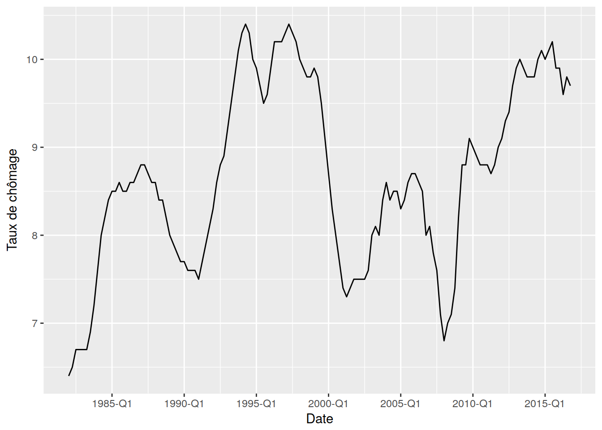

The figure sizes have been customised so that you can easily put two images side-by-side.
library("magrittr")
library("zoo")##
## Attaching package: 'zoo'## The following objects are masked from 'package:base':
##
## as.Date, as.Date.numericlibrary("ggplot2")## Want to understand how all the pieces fit together? Buy the
## ggplot2 book: http://ggplot2.org/book/library("WidukindR")
df <- get_serie("insee-txcho-reg-001515842")
df$year_quarter <- as.yearqtr(df$period, format = "%Y-Q%q")
df$value <- as.numeric(df$value)
df %>% ggplot() +
geom_line(
mapping = aes(x = year_quarter, y = value)
) +
scale_x_yearqtr(name = "Date", n = 10, format = "%Y-Q%q") +
scale_y_continuous(name = "Taux de chômage") 